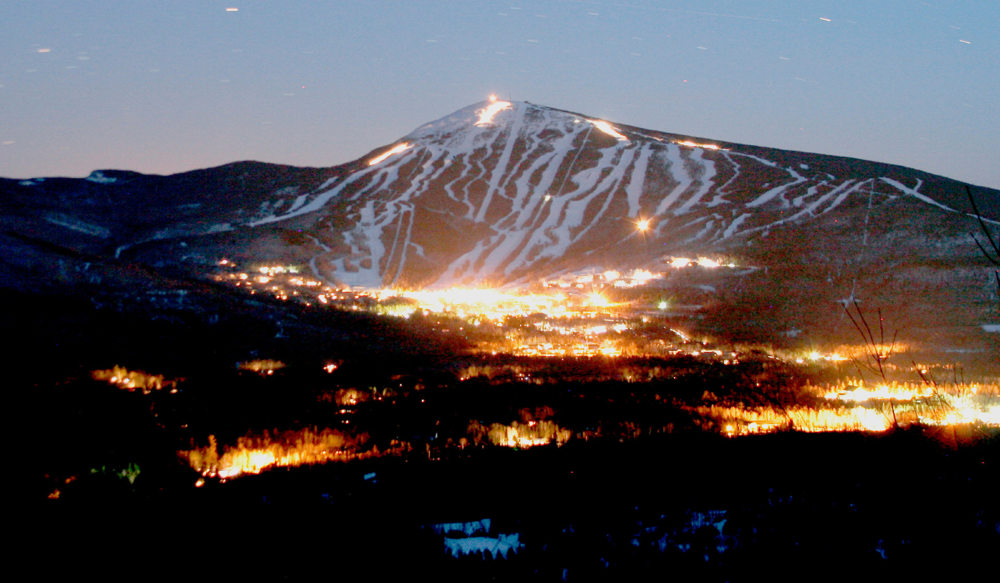
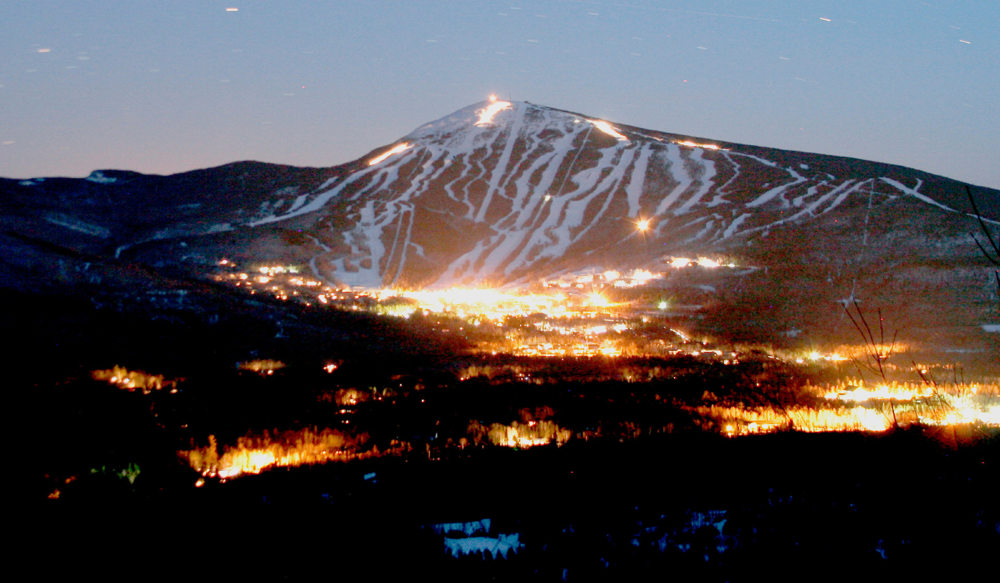

I have been snowboardng since I was in third grade and it has always been one of my favorite hobbies to do! For the last few years I have taken my spring breaks and flown out to Colorado to visit my family that lives there and head to the moauntains for a week and snowboard everyday. This is by far the week of the year I look forward to the most.
I have been to many mountains between Colorado and Maine including Lost Valley, Black Mountain, Sugarloaf, Sunday River, Steamboat Srings, Vail, Copper, Wolf Creek, and Arapahoe Basin. My favorite mountains have to be either Copper or Sugarloaf, but for different reasons. Copper, out in Colorado, has a massive terrain park thats actually about 6 times larger than Sugarloafs but Sugarloaf I get to ride with my friends and it's hard to top that.
I personally have been riding Ride boards and have been for the past 7 years and love them. The type of board you ride and the style can greatly affect your snowboarding expierence as they can vary greatly. From true twin boards vs. directional or powder boards or whether or not you prefer a board with rocker or camber all the way to the stiffness of the board and how you angle your bindings. There are a lot of variables that snowboards have which can allow you to find the perfect board for you if you do your research.
[ Home]